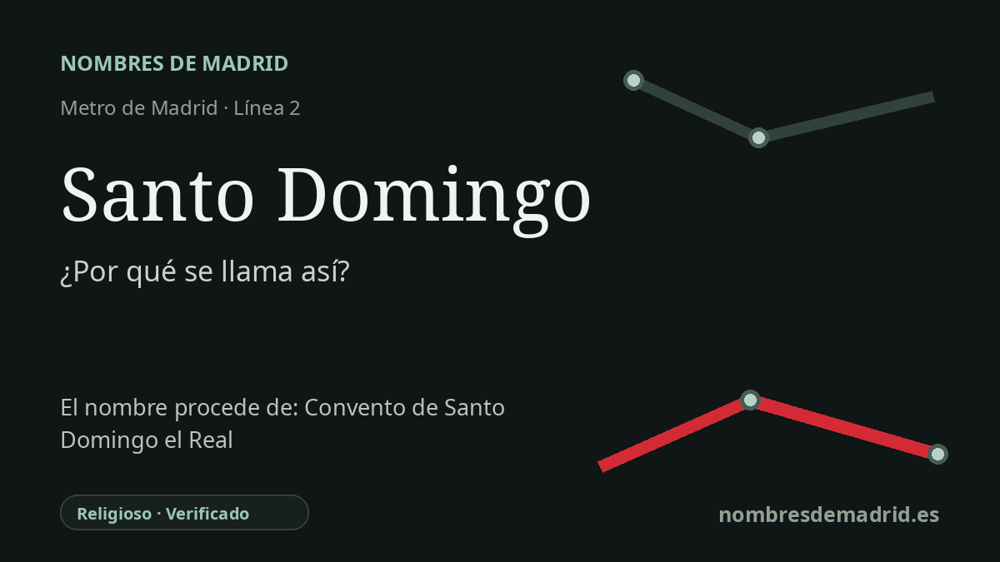

Publicado el · Investigación de Nombres de Madrid · Cómo verificamos cada origen · 6 fuentes consultadas
Respuesta rápida
La estación de Santo Domingo debe su nombre a la plaza de Santo Domingo, junto a la que se inauguró la línea 2 en 1925. La plaza conserva la memoria del monasterio medieval dominico de Santo Domingo el Real, derribado en 1869.
La historia del nombre
La estación de metro toma su nombre de la plaza de Santo Domingo, situada junto al acceso occidental original. La ficha histórica de Metro de Madrid sitúa la estación en la primera ampliación hacia el noroeste de la línea 2, inaugurada el 21 de octubre de 1925 entre Sol y Quevedo, y señala que el acceso inicial se planteó en la plaza de Santo Domingo.
El nombre de la plaza remite al desaparecido monasterio de Santo Domingo el Real. El convento estuvo en esta zona del antiguo barrio de Palacio hasta su derribo en 1869, y el espacio abierto ante él fijó el topónimo de Santo Domingo que pasaría a la plaza, a la cuesta y, finalmente, a la estación de metro.
El origen medieval es fundamental, pero debe contarse con cautela. Una ficha patrimonial municipal describe el lugar como primer monasterio de monjas y afirma que empezó como casa de frailes antes de transformarse muy pronto en convento femenino. Las fuentes dominicas y académicas coinciden en relacionarlo con el paso de santo Domingo de Guzmán por Madrid hacia 1219, aunque no dan siempre la misma secuencia: unas hablan de fundación en 1218, otras de 1219, y la página del centenario dominico distingue la existencia del grupo en 1219 de la clausura en edificio propio en 1220.
Santo Domingo el Real no fue una capilla menor. Los estudios sobre su patrimonio medieval lo presentan como una institución religiosa y aristocrática de gran peso, ligada al patronato regio, a enterramientos y a obras de arte relevantes. Su presencia también contribuyó a formar un arrabal, un primer suburbio, en el extremo noroccidental del Madrid medieval; esa memoria urbana sobrevivió incluso después de desaparecer el edificio.
El final del convento llegó en el clima político posterior a la revolución de 1868. El conjunto antiguo fue derribado en 1869, con la pérdida de importantes restos medievales y renacentistas, mientras que la comunidad dominica continuó más tarde en un nuevo Santo Domingo el Real en la calle de Claudio Coello. Para el nombre de la estación, la prueba más sólida es por tanto clara: la parada hereda un topónimo urbano duradero de la plaza, y la plaza conserva el nombre del antiguo monasterio dominico.